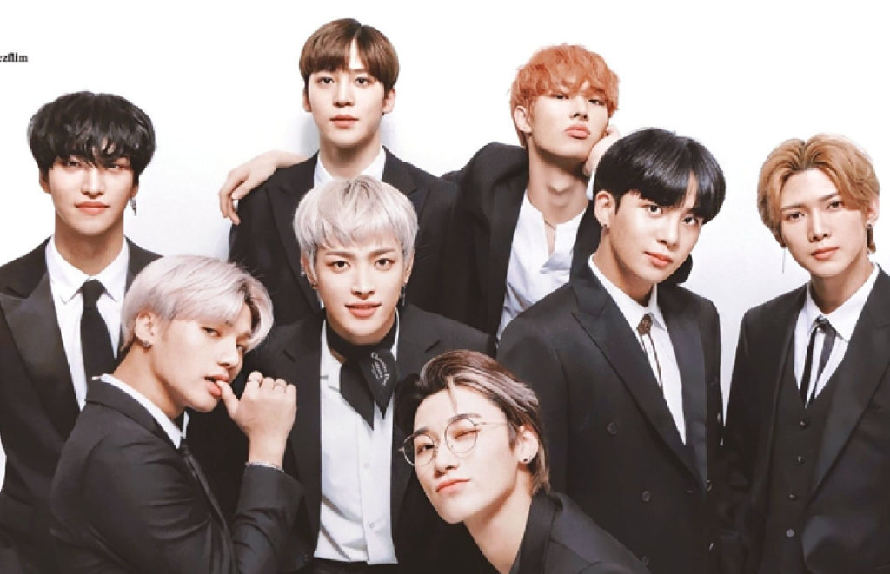
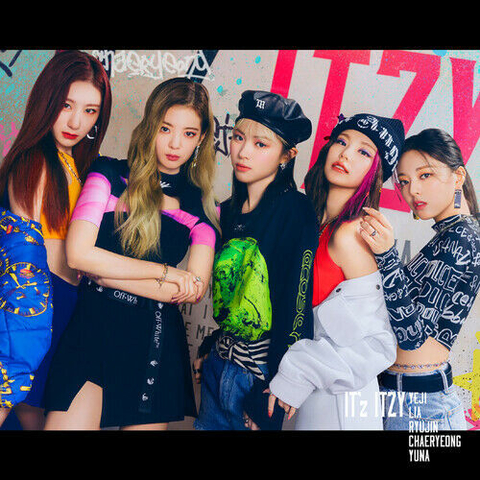
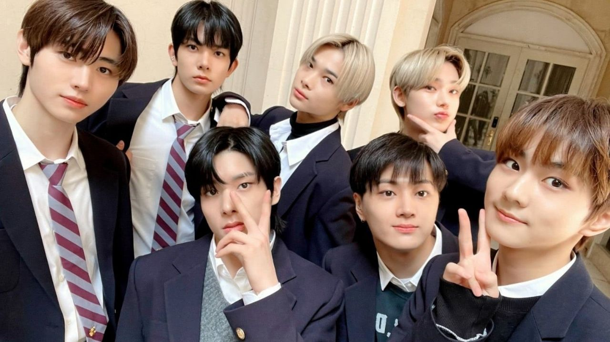
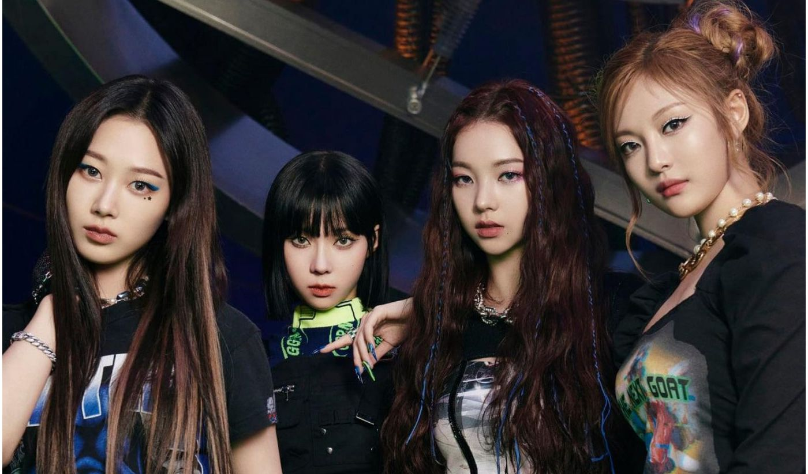

| Home | 1° geração | 2° geração | 3° geração | 4° geração | Extra:BTS |
|---|
Essa geração começou faz pouco tempo, por volta de 2018. Confira baixo:
O TXT - Tomorrow X Together- é grupo formado pela Hype Entertainiment, mesma empresa do BTS, que estreiou em 2019. Eles rapidamente conquistaram o público, principalmente daqui do Brasil, porque o membro Kai tem descêndencia brasileira. Começaram com um conceito fofo, mas agora estão investindo mais no conceito Rock'N'Rool, veja a difrença entre Crow e 0X1=Lovesong(I know I love you).
O grupo formado através do reality show da Mnet "Encontrando Stray Kids",debutou em 2017 pela JYP e atualmente tem 8 integrantes. Seus maiores sucessos são Miroh e God's Menu.

Ateez é um grupo masculino formado pela QR Entertainment, que tave sua estreia em 2018 e tem oito membros. Entre muitas músicas boas podemos citar Wonderland e Say My Name.

Formadas pela JYP em 2019, as quinco meninas já fizeram sucesso logo de cara, nos conquistanto com o hit Dalla Dalla e desde então todos os seus comebacks são sucesso. O mais recente foi Voltage.

Formado pelo reality I-Land em 2020, o grupo da Hype, tem 7 integrantes super lindos, fofos e novos!(o mais novo tem 16 anos). Eu acompanho esses meninos desde do início, então posso afirmar que seus maiores sucessos são Given-Taken e Fever.

Esse grupo foi formado pela SM Entertainment em 2020 e suas principais faixas são Black Mamba e Savage.

© Copyright Evy_Kelin